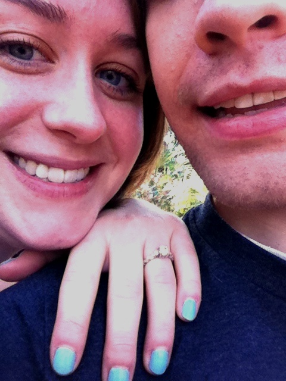
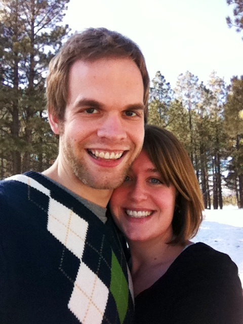

September 2008
How we met:
When I moved to Tallahassee to finish my degree at FSU, I didn’t have plans to room with anyone, so I opted for random roommates. One of them was Karissa Hazzard (Erik’s younger sister), who was in her second year of school, and who was moving in the same day I was. Mom and I got to the apartment after a 6 hour drive from Stuart, and met Karissa, Sally (Erik’s mom), and Erik, who was helping Karissa move in. I remember thinking, He’s so tall! and admiring the fact that he was a computer-guy (which always comes in handy!) He helped me bring my things in to the apartment, and tried to be very smooth and compliment a traveler’s trunk I brought (“Wow, did you paint this chest yourself?”)Since Erik’s sister and I were roommates, he was over a lot (usually eating our food and making goo-goo eyes at me), and we also found out we had a philosophy class together. One day he came by, caring a motorcycle helmet, and as he grabbed a muffin from our fridge, told me that he just bought a motorcycle! He was so cute and excited, and I asked if he wanted to take me for a spin after our class together. I remember, he came to pick me up, handed me his helmet to wear, and told me, “Rule number one: no wiggling.” We went to get ice-cream, and I decided I had a crush on him.
We saw each other a few more times, and one night Karissa and I had a dinner party for her (then) boyfriend and Erik. He sat close to me and made cute little nervous jokes, and then we decided to take a drive around Tallahassee on his bike. It was September, and a warm, clear night, so we could see the stars outside of the city. We stopped a few times to look at them, and Erik (always the scientist) said, “Yeah, they’re pretty. But it’s just a bunch of gas and dust.” (But don’t let him fool you! He really is a romantic underneath.)
After that, Erik asked me on an “official” date (which, after seeing me with helmet hair meant that he really liked me), and we have been together ever since! He is the cutest, smartest, and most compassionate person I’ve ever met, and I sometimes look at him and can’t believe my luck that he wants to marry me…

December 2011
Engagement Story:

January 2012
Where We Are Today:
We moved to Berkeley, California in January 2012, after Erik was hired to work at a company in San Francisco. His company is a start-up called Visual.ly, and they make infographics from different types of data. He is so excited to work with other tech-people and to explore the city. My most recent job was a manager at Ten Thousand Villages, where I worked with volunteers to sell fair trade crafts. It was a fabulous job, and I was very sad to leave, but I just love the Bay area. We live in an apartment right beside a park, within walking distance to a foodie-heaven called the “Gourmet Ghetto”, and just a short train ride into San Francisco. Our cat, Fiddlesticks, absolutely loves it, because we have windows in every room, and she can perch and watch the world go by.While Erik works, I am busy crafting things for the wedding, reading to my heart’s content and learning a little bit of programming (like this website!). I hope to get a job in the next few months, and still leave myself enough time to plan our wedding. We just love our new home, and hope everyone gets the chance to come visit!